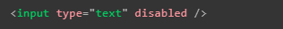
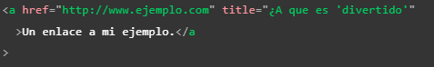

Algunas de las cosas que es necesario recordar al trabajar la estructura o funcionamiento de una paguina web con HTML son:
El anidamiento de las etiquetas debe de hacerse de forma correcta para evitar mal funcionamiento de los elementos, es decir el primer elementos en abrirse es el ultimo en cerrarse, y biceversa, por lo tanto nunca hay que mesclar el inicio y final de las etiquetas como se ve en el ejemplo, las etiquetas deben estar claramante dentro o fuera una de otras.
Los atributos booleanos son aquellos que unicamnte tienen un valor, generamente es el mismo que el nombre del atributo por lo que estos atributos se implementan sin valor alguno
Se puede usar libre mente ya sea comillas dobles o simples ya que estas son equivalentes, lo que nunca debe pasar es que se mesclen en un mismo elemento
Tambien se puede usar un tipo de comillas para los valores de los atributos y otro en el contenido
Si se necesita incluir el mismo tipo de comillas en el contenido es necesario utilizar entidades HTML para estas
Dentro del elemento "head" no solo se definen los metadatos tambien se puede encotrar la descripción de la paguina para los moteres de busqueda